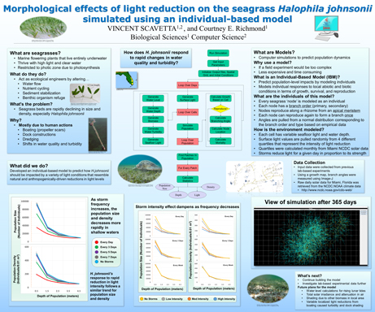
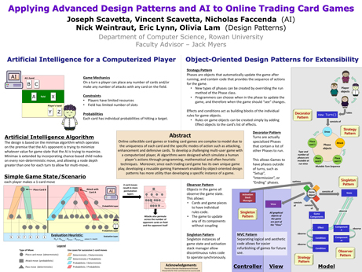

Here are a few of the research projects that I have completed during my time at Rowan University. These projects
were not part of any course curiculum and were sponsored by faculty at the university.

Halophila johnsonii Individual Based Model (IBM)
This was the poster that I created to present my research on the seagrass, Halophila johnsonii under the super
vision of Dr. Richmond. This was presented at the 2016 Rowan University STEM Symposium.

APPLYING AI TO ONLINE TRADING CARD GAMES
This was the poster that my group and I created to present our research and project on the implementation of
an AI into a trading card game. This was presented at the 2016 Rowan University STEM Symposium.